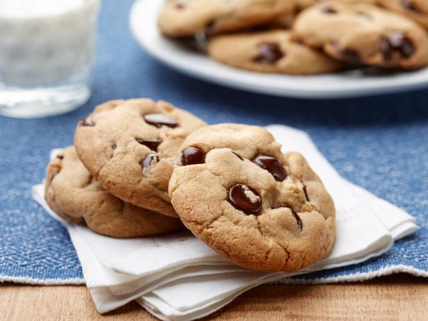

Classic Chocolate Chip Cookies

Classic Chocolate Chip Cookies Recipe
These classic chocolate chip cookies are soft, chewy, and loaded with chocolate chips. They're the perfect sweet treat for any occasion.
Ingredients
- 1 cup unsalted butter, softened
- 3/4 cup granulated sugar
- 3/4 cup brown sugar
- 2 eggs
- 1 teaspoon vanilla extract
- 2 1/4 cups all-purpose flour
- 1 teaspoon baking soda
- 1 teaspoon salt
- 1 cup semisweet chocolate chips
Steps
- Preheat the oven to 375°F (190°C). Line a baking sheet with parchment paper.
- In a large bowl, cream together the butter, granulated sugar, and brown sugar until smooth. Beat in the eggs one at a time, then stir in the vanilla.
- In a separate bowl, whisk together the flour, baking soda, and salt. Gradually add the dry ingredients to the wet ingredients and mix until just combined.
- Fold in the chocolate chips. Drop the dough by rounded tablespoonfuls onto the prepared baking sheet, leaving about 2 inches of space between the cookies.
- Bake the cookies for 8-10 minutes, or until they are lightly golden around the edges. Remove the cookies from the oven and let them cool on the baking sheet for a few minutes before transferring them to a wire rack to cool completely. Enjoy!
Home